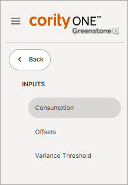
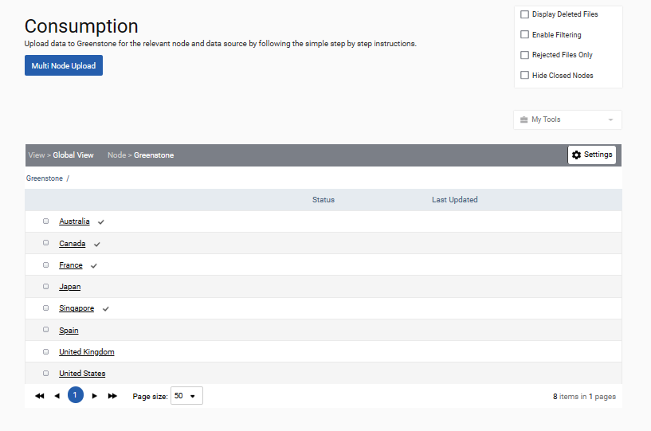
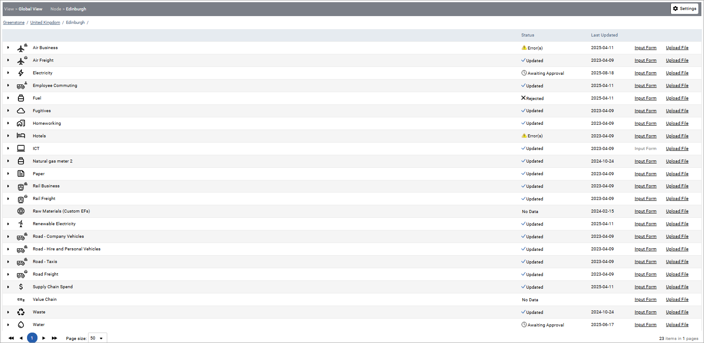
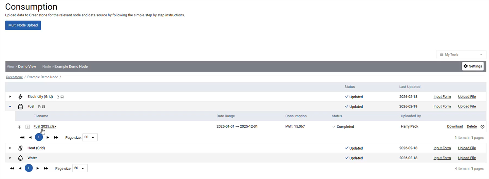
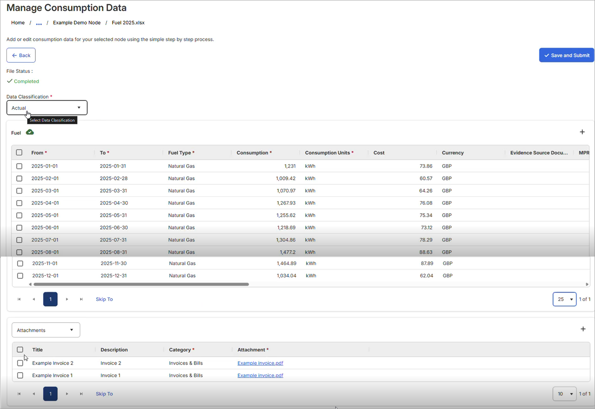

After entering the environment module, the inputs section can be accessed via the inputs dropdown at the top of the page. Three types of inputs can be made: consumption, offsets and variances. Consumption and offsets are detailed in this chapter. For details on variances, see the Environment – Variance section.

Selecting Consumption will allow you to view the nodes, data sources and views you have access to. Nodes represent the organizational units you are collecting data against. They could be offices, data centers, countries, assets etc. Views are tiered collections of nodes which may reflect the organizational structure of your organization. A single node may be available across multiple views.
To change the node or view that is displayed select the ‘Settings’ button at the top of the table. This will trigger a pop-up for which the view and view category can be selected from the associated dropdowns. A particular node within the view can be selected using the final dropdown or through ticking the Search by node name box and typing the name of the node you wish to select. Alternatively, you can navigate through the node structure from within the table itself, by clicking on a node, or the breadcrumb trail.

Consumption and business activity data can be uploaded to data sources, some of which are displayed below. Each data source is assigned a particular data source type and can accept the associated data. Please note, a data source can be present in one view, but not another. However, if a single data source is available across multiple views, the data it contains will be visible in each of these views.

Consumption and business activity data can be added to data sources using one of three upload methods:
As of v26.1, you can view and edit data previously entered for these data sources, or uploaded through any method (direct input, Microsoft Excel uploads, SFTP, and the API), directly in the Consumption page. This will be available for the remaining activity types in a future release.
When you expand the data source you will see the filename(s) along with their date range, consumption, and status. Click the filename to open it.

When the upload opens, at the top you will see the file status and data classification. Below that, you will see the business activity data. Scroll to the right to see additional data columns and use the drop-down options at the bottom right to expand the number of visible/accessible rows. At the bottom of the screen, any supporting information provided (notes and/or attachments) is available. For an attachment, you can click on the file name to download it. To navigate back to the original screen, simply click the Back button.
See Input Form for further information.
